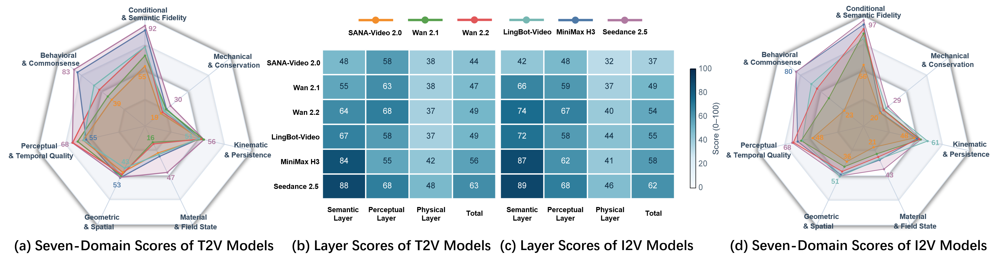
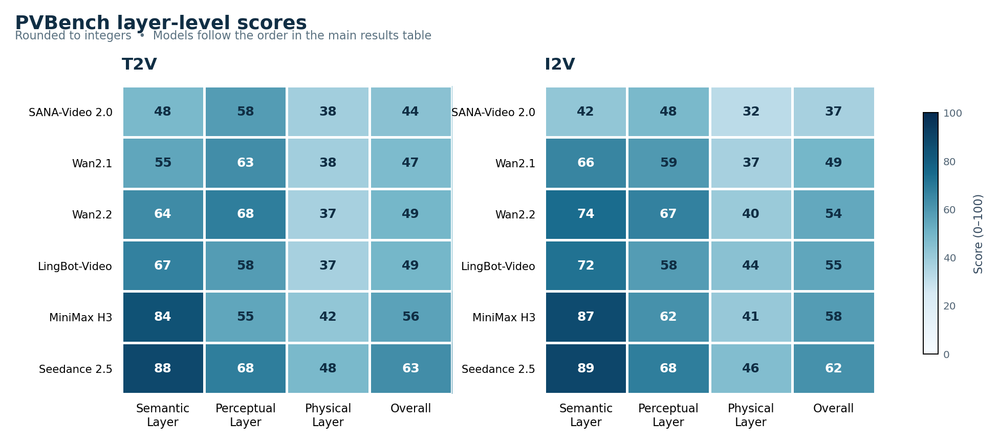

600
prompt groups
Carefully designed scenes with matched T2V and I2V variants.
Object-level measurements for geometry, motion, materials, and mechanics.
assets/pvbench-teaser.mp4 before public launchModern video generators can produce visually compelling results while still violating geometry, kinematics, dynamics, and conservation laws. PVBench provides a unified way to measure those failures.
Carefully designed scenes with matched T2V and I2V variants.
Three assessment layers organized across seven domains.
Object-intrinsic, object-space, and object-spatiotemporal properties.
Challenging scenarios with robots, humanoids, quadrupeds, and multi-agent systems.
PVBench combines specialized vision models, physical-law checks, and MLLM-assisted judgments to evaluate what generated videos actually preserve.
Condition and semantic fidelity; behavioral, causal, and commonsense consistency.
Subject consistency, aesthetic quality, temporal stability, and motion smoothness.
Geometry, materials, kinematics, mechanics, and conservation laws.

Each prompt is constructed around a target dimension, an observable scene, and a verifiable evaluation signal.

PVBench reports semantic, perceptual, and physical scores together, making it possible to distinguish a beautiful video from a physically plausible one.


PVBench is designed to help researchers move from “looks good” to “obeys the world.” Code and release materials will be linked here as they become available.
Publication and persistent links will be updated after the public release.
@inproceedings{pvbench2026,
title = {PVBench: Quantifying Physical Plausibility in Video Generation with Object-Level Physical Measurements},
author = {Chen, Kaiwei and Li, Moran and Gan, Zhenye and Wang, Yabiao and Wang, Chengjie and Zhang, Kexin and Liu, Yong and Zhang, Jiangning},
year = {2026}
}